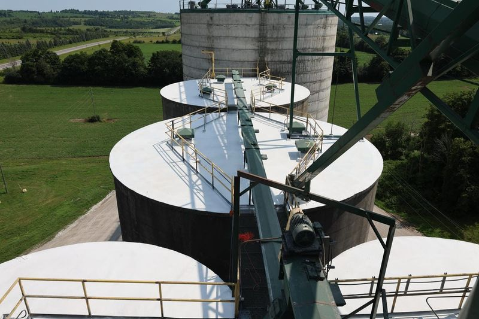

Tank & Vessel Linings
Waterproofing, Corrosion-Resistant Linings, and Secondary Containment for Silos, Grain Bins, and Industrial Vessels
Your Silo Is Leaking. Your Grain Bin Is Corroding. Your Containment Structure Is Not Going to Pass the Next Inspection.
Concrete silos crack. Steel grain bins rust from the inside out when moisture condenses on uncoated surfaces. Water tanks lose structural integrity as corrosion eats through wall sections. And secondary containment structures that were adequate when they were built 15 years ago are now failing at joints, penetrations, and construction seams where the original waterproofing has deteriorated.
These are not cosmetic problems. A leaking silo roof allows moisture into stored grain — causing spoilage, mould growth, and inventory loss worth tens of thousands of dollars per season. A corroding grain bin wall weakens the structure that holds 20,000 bushels of grain under lateral pressure. A compromised containment structure means the next spill reaches the ground, and the regulatory consequences follow.
FX Coating provides tank and vessel lining systems that solve these problems permanently. Our systems are engineered for the specific demands of each structure type — waterproofing for concrete silos, corrosion protection for steel bins, reflective coatings for roof temperature management, and chemically resistant linings for industrial containment.
Silo and Grain Bin Waterproofing
FX Black Rubber is a liquid-applied rubber membrane system for waterproofing concrete silo roofs, grain bin bases, foundation joints, and exterior wall surfaces. Applied at 40 to 80 mils of dry film thickness, FX Black Rubber cures into a seamless, flexible membrane that bridges cracks up to 3 mm wide and moves with the structure's thermal expansion and contraction cycles.
Unlike sheet membrane systems that rely on adhesive bonds and overlapping seams, FX Black Rubber is applied as a liquid that cures into a single, continuous membrane with no seams, fasteners, or mechanical attachments. Every penetration — roof hatches, vent pipes, level sensors, auger openings — is wrapped directly into the membrane with no joint compound or caulking that will eventually fail.
For grain elevator and agricultural operations across Southwestern Ontario, silo waterproofing is the most cost-effective way to protect stored inventory. A single season of moisture-damaged grain can cost more than the entire waterproofing project.
Interior Vessel Protection
FX White Rubber is a food-grade interior lining system for tanks, vessels, and storage structures where the stored product contacts the lining surface. The bright white finish provides a clean, inspectable interior surface that makes contamination, corrosion, and damage visible during maintenance inspections. FX White Rubber resists moisture, mild chemicals, and biological growth while maintaining a non-toxic, non-tainting surface suitable for grain, water, and feed storage.
For steel grain bins and water tanks, FX White Rubber provides dual protection: waterproofing the interior surface to prevent corrosion from condensation and stored-product moisture, and creating a smooth, cleanable surface that prevents grain from sticking to corroded or pitted steel.
Roof Temperature Management
FX Cool Roof is a reflective roof coating system that reduces surface temperatures by reflecting solar radiation. On a grain bin or silo in Southwestern Ontario's summer heat, an uncoated steel or concrete roof can reach surface temperatures of 70 to 80 degrees Celsius. This heat transfers into the stored grain, creating temperature differentials that drive moisture migration and condensation — the primary cause of grain spoilage in the headspace zone.
FX Cool Roof reduces roof surface temperatures by 20 to 30 degrees Celsius by reflecting up to 85 percent of solar radiation. Lower roof temperatures mean less moisture migration, less condensation, and better preservation of stored grain quality. The reflective coating also reduces thermal cycling stress on the roof structure, extending the service life of the underlying substrate.
Secondary Containment Linings
For manufacturing facilities and wastewater treatment plants that store regulated substances, FX Coating installs secondary containment linings that meet Ontario environmental regulations. These linings must contain 110 percent of the largest vessel's volume and be chemically compatible with the stored substance.
Secondary containment lining systems include:
- FX Epoxy — chemical-resistant floor and wall lining for concrete containment dikes surrounding fuel tanks, chemical tanks, and waste storage vessels
- FX Steel-Shield — high-build epoxy for steel containment walls, tank saddles, and equipment pads
- Fiberglass-reinforced linings — FX Epoxy or FX Steel-Shield with embedded fiberglass mat for crack-bridging and impact resistance in containment areas subject to structural movement or vehicle traffic
Every containment lining project includes spark testing (holiday detection) to verify that the cured membrane has no pinholes, voids, or discontinuities that would allow stored chemicals to reach the substrate.
Corrosion Protection for Steel Structures
FX Steel-Shield provides long-term corrosion protection for steel tanks, bins, structural members, and equipment in aggressive environments. Applied over abrasive blast-cleaned steel (SSPC-SP6 or SP10), FX Steel-Shield creates a dense epoxy barrier that prevents moisture, oxygen, and corrosive chemicals from reaching the steel surface.
For grain bins, FX Steel-Shield is applied to exterior surfaces, structural supports, and transition areas where steel meets concrete foundations — the joints where corrosion typically begins. For industrial tanks, the system protects both interior and exterior surfaces depending on the service environment and the stored product.
Industries Served
- Grain Elevators and Agriculture — silo waterproofing, grain bin linings, roof coatings, base and foundation protection
- Wastewater Treatment — secondary containment, chemical tank linings, clarifier coatings
- Manufacturing — fuel tank containment, chemical storage linings, process vessel protection
- Food Processing — water tank linings, ingredient storage vessel protection
Frequently Asked Questions
FX Black Rubber is a liquid-applied rubber membrane that cures into a seamless, flexible, waterproof barrier. It is applied directly to the prepared concrete or steel substrate — roof decks, wall exteriors, foundation joints, and penetrations — at a thickness of 40 to 80 mils. The cured membrane bridges cracks up to 3 mm, flexes with structural movement, and creates a continuous waterproof envelope with no seams, fasteners, or joints where water can penetrate.
Secondary containment is a barrier system designed to capture and contain hazardous liquids if the primary storage vessel fails or leaks. In Ontario, secondary containment is required by environmental regulations for facilities that store fuel, chemicals, waste oil, and other regulated substances. FX Coating installs secondary containment linings using FX Epoxy, FX Steel-Shield, and fiberglass-reinforced systems that must contain 110 percent of the largest tank's volume.
Tank linings can be applied to steel that has surface rust, but the steel must be structurally sound and properly prepared. FX Coating performs thickness testing to confirm structural integrity before specifying a lining system. Surface rust and scale are removed by abrasive blast cleaning to SSPC-SP6 or SSPC-SP10 standards. If the steel has corroded to the point where structural capacity is compromised, it must be repaired or replaced before lining installation.
Timeline depends on the structure's size, condition, and the lining system specified. A typical grain bin waterproofing project with FX Black Rubber takes 3 to 7 days for bins in the 5,000 to 20,000 bushel range. Larger structures or those requiring steel repair, interior lining, and roof coating take proportionally longer. FX Coating schedules agricultural projects around harvest and planting seasons to minimize impact on operations.
Protect Your Tanks, Silos, and Containment Structures
Our team will inspect your structure, assess the substrate condition, and recommend the right lining system to stop leaks, prevent corrosion, and meet regulatory requirements.